<title>となり</title>
<meta name="claude:viewport-fit-sides" content="cover">
<!-- house-style: none | 2 プレゼン用の動くページ（アプリ「となり」の紹介。色はアプリ自身の配色から取った） -->
<link rel="preconnect" href="https://fonts.googleapis.com">
<link rel="stylesheet" href="https://fonts.googleapis.com/css2?family=Geist:wght@400;500;600;700&family=Geist+Mono:wght@400;500&family=IBM+Plex+Sans+JP:wght@400;500;600;700&display=swap">
<style>
/* 読み方: 左に文、右に図。中ほどの1か所だけ、スクロールで「位置の図」が組み上がる。色はアプリの配色（紙・墨・届いた印の青・理解の3色）だけ */
:root {
  --paper: oklch(0.993 0.002 258);
  --paper-2: oklch(0.972 0.005 258);
  --line: oklch(0.900 0.008 258);
  --edge: oklch(0.640 0.012 258);
  --ink: oklch(0.215 0.015 258);
  --ink-2: oklch(0.470 0.016 258);
  --ready: oklch(0.520 0.170 258);
  --ready-soft: oklch(0.950 0.030 258);
  --known: oklch(0.450 0.110 150);
  --known-soft: oklch(0.950 0.035 150);
  --shaky: oklch(0.470 0.100 70);
  --shaky-soft: oklch(0.955 0.050 85);
  --unknown: oklch(0.480 0.150 25);
  --unknown-soft: oklch(0.955 0.030 25);
  --rec: oklch(0.600 0.200 25);
  --center: oklch(0.215 0.015 258);
  --center-ink: oklch(0.990 0.002 258);
  --shadow: 0 0 0 1px oklch(0.880 0.008 258), 0 2px 4px rgba(20, 30, 50, .04), 0 24px 48px -16px rgba(20, 30, 50, .18);
  --f-body: "IBM Plex Sans JP", "Hiragino Sans", "Hiragino Kaku Gothic ProN", sans-serif;
  --f-latin: "Geist", "IBM Plex Sans JP", "Hiragino Sans", sans-serif;
  --f-num: "Geist Mono", ui-monospace, "SF Mono", monospace;
  --ease: cubic-bezier(.23, 1, .32, 1);
  --r: 14px;
}
@media (prefers-color-scheme: dark) {
  :root:not([data-theme="light"]) {
    --paper: oklch(0.170 0.007 258);
    --paper-2: oklch(0.205 0.009 258);
    --line: oklch(0.310 0.012 258);
    --edge: oklch(0.520 0.012 258);
    --ink: oklch(0.965 0.004 258);
    --ink-2: oklch(0.730 0.010 258);
    --ready: oklch(0.760 0.120 258);
    --ready-soft: oklch(0.290 0.050 258);
    --known: oklch(0.820 0.110 150);
    --known-soft: oklch(0.300 0.050 150);
    --shaky: oklch(0.850 0.110 85);
    --shaky-soft: oklch(0.310 0.050 75);
    --unknown: oklch(0.800 0.100 25);
    --unknown-soft: oklch(0.310 0.060 25);
    --rec: oklch(0.700 0.180 25);
    --center: oklch(0.960 0.004 258);
    --center-ink: oklch(0.180 0.010 258);
    --shadow: 0 0 0 1px oklch(0.300 0.012 258), 0 24px 48px -16px rgba(0, 0, 0, .6);
    color-scheme: dark;
  }
}
:root[data-theme="dark"] {
  --paper: oklch(0.170 0.007 258);
  --paper-2: oklch(0.205 0.009 258);
  --line: oklch(0.310 0.012 258);
  --edge: oklch(0.520 0.012 258);
  --ink: oklch(0.965 0.004 258);
  --ink-2: oklch(0.730 0.010 258);
  --ready: oklch(0.760 0.120 258);
  --ready-soft: oklch(0.290 0.050 258);
  --known: oklch(0.820 0.110 150);
  --known-soft: oklch(0.300 0.050 150);
  --shaky: oklch(0.850 0.110 85);
  --shaky-soft: oklch(0.310 0.050 75);
  --unknown: oklch(0.800 0.100 25);
  --unknown-soft: oklch(0.310 0.060 25);
  --rec: oklch(0.700 0.180 25);
  --center: oklch(0.960 0.004 258);
  --center-ink: oklch(0.180 0.010 258);
  --shadow: 0 0 0 1px oklch(0.300 0.012 258), 0 24px 48px -16px rgba(0, 0, 0, .6);
  color-scheme: dark;
}

html, body { overflow-x: clip; }
body {
  background: var(--paper); color: var(--ink);
  font: 400 17px/1.8 var(--f-body);
  text-autospace: normal; font-synthesis: none; -webkit-font-smoothing: antialiased;
  padding-left: max(16px, env(safe-area-inset-left, 0px)); padding-right: max(16px, env(safe-area-inset-right, 0px));
}
.wrap { max-width: 1160px; margin: 0 auto; }
h1, h2, h3 { font-feature-settings: "palt"; word-break: keep-all; text-wrap: balance; margin: 0; }
h1 { font-weight: 700; font-size: clamp(38px, 4.9vw, 66px); line-height: 1.18; letter-spacing: -0.02em; }
h2 { font-weight: 700; font-size: clamp(28px, 3.6vw, 46px); line-height: 1.3; letter-spacing: -0.015em; }
h3 { font-weight: 650; font-size: 20px; line-height: 1.45; }
p { margin: 0; }
.lead { font-size: clamp(17px, 1.5vw, 19px); color: var(--ink-2); max-width: 36em; }
.num { font-family: var(--f-num); font-variant-numeric: tabular-nums; }
kbd { font: 500 13px/1 var(--f-num); padding: 5px 8px; border: 1px solid var(--line); border-bottom-width: 2px; border-radius: 6px; background: var(--paper-2); color: var(--ink); }
section { padding-block: clamp(72px, 10vw, 140px); }
section + section { border-top: 1px solid var(--line); }
.sec-head { display: grid; gap: 16px; max-width: 46em; margin-bottom: clamp(36px, 5vw, 56px); }
.kicker { font-size: 14px; font-weight: 600; color: var(--ink-2); }
figure { margin: 0; }
figcaption { font-size: 13.5px; color: var(--ink-2); margin-top: 12px; line-height: 1.7; }
:focus-visible { outline: 2px solid var(--ready); outline-offset: 3px; border-radius: 4px; }

/* ── 1 表紙 ── */
.hero { padding-block: clamp(56px, 8vw, 104px) clamp(64px, 9vw, 120px); }
.hero-grid { display: grid; grid-template-columns: minmax(0, 1fr) minmax(0, 1.2fr); gap: clamp(32px, 5vw, 72px); align-items: center; }
.mark { display: inline-flex; align-items: center; gap: 12px; margin-bottom: 28px; }
.logo { position: relative; width: 34px; height: 34px; flex: none; }
.logo b, .logo i { position: absolute; border-radius: 3px; }
.logo b { left: 12px; top: 12px; width: 10px; height: 10px; background: var(--ink); }
.logo i { width: 8px; height: 8px; background: var(--edge); }
.logo i:nth-child(1) { left: 13px; top: 0; } .logo i:nth-child(2) { left: 13px; bottom: 0; }
.logo i:nth-child(3) { left: 0; top: 13px; } .logo i:nth-child(4) { right: 0; top: 13px; }
.mark-t { font-weight: 700; font-size: 20px; letter-spacing: .04em; }
.mark-t small { display: block; font-weight: 400; font-size: 12.5px; color: var(--ink-2); letter-spacing: 0; }
.hero h1 { margin-bottom: 26px; }
.hero .lead { margin-bottom: 30px; }
.keys { display: flex; flex-wrap: wrap; gap: 10px 22px; font-size: 14.5px; color: var(--ink-2); }
.keys span { display: inline-flex; align-items: center; gap: 8px; }
.window { border-radius: 12px; overflow: hidden; background: var(--paper-2); box-shadow: var(--shadow); }
.window-bar { display: flex; gap: 7px; padding: 10px 12px; background: var(--paper-2); border-bottom: 1px solid var(--line); }
.window-bar i { width: 11px; height: 11px; border-radius: 50%; background: var(--line); }
.window img { display: block; width: 100%; height: auto; }

/* ── 2 回し方 ── */
.loop-grid { display: grid; grid-template-columns: minmax(0, 1fr); gap: 36px; }
.tl { overflow-x: auto; border: 1px solid var(--line); border-radius: var(--r); background: var(--paper); padding: 18px 18px 10px; }
.tl svg { display: block; width: 100%; min-width: 760px; height: auto; }
.tl text { font-family: var(--f-body); fill: var(--ink-2); }
.tl .lane-t { font-size: 13px; fill: var(--ink); font-weight: 600; }
.tl .tick { font: 11px var(--f-num); }
.tl .grid { stroke: var(--line); stroke-width: 1; }
.seg-rec { fill: var(--rec); } .seg-stt { fill: var(--ready); } .seg-fix { fill: var(--shaky); }
.seg-think { fill: var(--paper-2); stroke: var(--edge); stroke-width: 1; stroke-dasharray: 3 3; }
.seg-ready { fill: var(--ready); }
.seg-you { fill: var(--ink); } .seg-read { fill: var(--known); } .seg-wait { fill: none; stroke: var(--edge); stroke-dasharray: 2 4; stroke-width: 1.4; }
.tl .seg-label { font-size: 11.5px; fill: var(--paper); font-weight: 600; }
.tl .seg-label.dark { fill: var(--ink-2); font-weight: 500; }
.legend { display: flex; flex-wrap: wrap; gap: 6px 18px; font-size: 13px; color: var(--ink-2); padding: 6px 2px 2px; }
.legend span { display: inline-flex; align-items: center; gap: 7px; }
.legend i { width: 14px; height: 10px; border-radius: 3px; display: inline-block; }
.loop-pair { display: grid; grid-template-columns: minmax(0, 1fr) minmax(0, 1.35fr); gap: clamp(28px, 4vw, 56px); align-items: center; }
.steps { display: grid; gap: 18px; margin: 0; padding: 0; list-style: none; counter-reset: s; }
.steps li { display: grid; grid-template-columns: 92px minmax(0, 1fr); gap: 14px; align-items: baseline; }
.steps li kbd { justify-self: start; }
.steps b { display: block; font-weight: 650; }
.steps p { color: var(--ink-2); font-size: 15.5px; }

/* ── 3 声 ── */
.pipe { display: grid; grid-template-columns: repeat(4, minmax(0, 1fr)); gap: 0; margin-bottom: 40px; }
.pipe-step { position: relative; padding: 18px 22px 18px 0; }
.pipe-step + .pipe-step { padding-left: 22px; border-left: 1px solid var(--line); }
.pipe-step b { display: block; font-size: 16px; font-weight: 650; margin-bottom: 4px; }
.pipe-step p { font-size: 14.5px; color: var(--ink-2); line-height: 1.7; }
.pipe-step .num { display: block; font-size: 13px; color: var(--ink-2); margin-top: 8px; }
.pipe-par { display: grid; gap: 10px; }
.pipe-par div { padding: 10px 12px; border: 1px solid var(--line); border-radius: 10px; background: var(--paper-2); font-size: 14px; line-height: 1.6; }
.pipe-par div b { font-size: 14.5px; margin: 0; display: inline; }
.voice-grid { display: grid; grid-template-columns: minmax(0, 1.1fr) minmax(0, 1fr); gap: clamp(28px, 4vw, 56px); align-items: start; }
.heard { display: grid; gap: 14px; }
.heard-row { display: grid; grid-template-columns: 74px minmax(0, 1fr); gap: 12px; align-items: baseline; }
.heard-row .k { font-size: 13px; color: var(--ink-2); font-weight: 600; }
.heard-row p { font-size: 18px; line-height: 1.75; }
.miss { color: var(--unknown); text-decoration: line-through; text-decoration-thickness: 1.5px; }
.fixd { border-bottom: 2.5px solid var(--ready); }
.unsure { border-bottom: 2.5px dotted var(--shaky); }
.note { font-size: 14px; color: var(--ink-2); line-height: 1.75; }
.cer { display: grid; gap: 12px; }
.cer-row { display: grid; grid-template-columns: minmax(0, 13em) minmax(0, 1fr) 4.2em; gap: 12px; align-items: center; font-size: 14.5px; }
.cer-bar { height: 12px; border-radius: 6px; background: var(--paper-2); overflow: hidden; }
.cer-bar i { display: block; height: 100%; border-radius: 6px; background: var(--edge); }
.cer-row.best .cer-bar i { background: var(--known); }
.cer-row .num { text-align: right; font-size: 15px; }
.cer-row.best .num { color: var(--known); font-weight: 500; }
.cer-zero { width: 4px !important; }

/* ── 4 位置の図（唯一の大きな場面） ── */
.scene { padding-block: clamp(72px, 10vw, 140px) 0; }
.scene-grid { display: grid; grid-template-columns: minmax(0, 0.8fr) minmax(0, 1.2fr); gap: clamp(28px, 4vw, 64px); }
.beats { display: grid; }
.beat { min-height: 72svh; display: grid; align-content: center; gap: 12px; padding-block: 24px; }
.beat:first-child { min-height: 60svh; align-content: start; padding-top: 0; }
.beat:last-child { min-height: 80svh; }
.beat .k { font-size: 13.5px; font-weight: 600; color: var(--ink-2); }
.beat p { color: var(--ink-2); font-size: 16.5px; max-width: 26em; }
.beat q { display: inline-block; quotes: "「" "」"; background: var(--known-soft); color: var(--ink); padding: 2px 6px; border-radius: 4px; }
.motion .beat { transition: opacity .5s var(--ease); }
.motion .beat:not(.on) { opacity: .58; }
.stage-col { position: relative; }
.stage { position: sticky; top: calc(env(safe-area-inset-top, 0px) + max(32px, 8svh)); display: grid; gap: 14px; }
.map-card { border: 1px solid var(--line); border-radius: 18px; background: var(--paper); padding: 10px; box-shadow: var(--shadow); }
.map-svg { display: block; width: 100%; height: auto; }
.map-svg .guide text { font-size: 11px; fill: var(--ink-2); }
.map-svg .edge { stroke: var(--edge); stroke-width: 1.4; transition: stroke .6s var(--ease), stroke-width .6s var(--ease), stroke-opacity .6s var(--ease); }
.map-svg .edge.e-general { stroke-dasharray: 5 4; }
.map-svg .edge.e-inferred { stroke-dasharray: 1.5 4; stroke-linecap: round; }
.map-svg .elab rect { fill: var(--paper); stroke: var(--line); }
.map-svg .elab text { font-size: 11px; fill: var(--ink-2); }
.map-svg .node rect { fill: var(--paper); stroke: var(--edge); stroke-width: 1.3; transition: fill .6s var(--ease), stroke .6s var(--ease), stroke-dasharray .6s; }
.map-svg .node text { fill: var(--ink); font-weight: 500; transition: opacity .45s var(--ease); }
.map-svg .node .tag { font-size: 10.5px; fill: var(--ready); font-weight: 600; }
.map-svg .center rect { fill: var(--center); stroke: var(--center); }
.map-svg .center text { fill: var(--center-ink); font-weight: 700; }
.map-svg .ghost-t { fill: var(--ink-2); font-size: 12px; opacity: 0; }
/* まだ埋まっていない置き場所は、置き場所の名前だけを出した枠にする（消さない） */
.map-svg .node.ghost rect { fill: transparent; stroke: var(--line); stroke-dasharray: 4 4; }
.map-svg .node.ghost .real-t, .map-svg .node.ghost .tag { opacity: 0; }
.map-svg .node.ghost .ghost-t { opacity: 1; }
.map-svg .edge.ghost { stroke-opacity: .35; stroke-dasharray: 2 5; }
.map-svg .elab.ghost { opacity: 0; }
.map-svg .edge.known { stroke: var(--known); stroke-width: 2.6; stroke-dasharray: none; }
.map-svg .elab.known rect { fill: var(--known-soft); stroke: var(--known); }
.map-svg .elab.known text { fill: var(--known); font-weight: 600; }
.map-foot { display: grid; grid-template-columns: minmax(0, 1fr) auto; gap: 8px 16px; align-items: center; font-size: 13.5px; color: var(--ink-2); padding: 0 6px; }
.cov-bar { height: 8px; border-radius: 4px; background: var(--paper-2); overflow: hidden; grid-column: 1 / -1; }
.cov-bar i { display: block; height: 100%; width: 100%; border-radius: 4px; background: var(--known); transform-origin: left; transform: scaleX(.2); transition: transform .8s var(--ease); }
.lgd { display: flex; flex-wrap: wrap; gap: 4px 14px; font-size: 12px; color: var(--ink-2); padding: 0 6px; }
.lgd span { display: inline-flex; align-items: center; gap: 6px; }
.lgd i { width: 18px; border-top: 1.6px solid var(--edge); display: inline-block; }
.lgd i.d { border-top-style: dashed; } .lgd i.o { border-top-style: dotted; border-top-width: 2.4px; } .lgd i.k { border-top: 2.6px solid var(--known); }

/* ── 5 答えの型 ── */
.answer-grid { display: grid; grid-template-columns: minmax(0, 0.75fr) minmax(0, 1.25fr); gap: clamp(28px, 4vw, 56px); align-items: start; }
.order { margin: 0; padding: 0; list-style: none; display: grid; gap: 18px; }
.order li { display: grid; grid-template-columns: 34px minmax(0, 1fr); gap: 12px; }
.order .n { font: 500 15px/1.6 var(--f-num); color: var(--ink-2); }
.order b { font-weight: 650; display: block; }
.order p { font-size: 15px; color: var(--ink-2); }
.shots { display: grid; gap: 22px; }

/* ── 5 見せ方 ── */
.forms { columns: 3 300px; column-gap: 20px; }
.form-card { break-inside: avoid; margin: 0 0 20px; border: 1px solid var(--line); border-radius: var(--r); background: var(--paper); overflow: hidden; display: block; }
.form-card img { display: block; width: 100%; height: auto; border-bottom: 1px solid var(--line); }
.form-card figcaption, .form-card.text-only { margin: 0; padding: 12px 16px 14px; font-size: 14px; color: var(--ink-2); line-height: 1.7; }
.form-card figcaption b, .form-card.text-only b { display: block; color: var(--ink); font-size: 15.5px; margin-bottom: 2px; }
.form-card.text-only p { font-size: 14px; }
.forms-note { margin: 8px 0 48px; }
.redo-grid { display: grid; grid-template-columns: minmax(0, 0.8fr) minmax(0, 1.2fr); gap: clamp(28px, 4vw, 56px); align-items: center; }
.redo-grid h3 { margin-bottom: 10px; }

/* ── 6 理解度 ── */
.und-grid { display: grid; grid-template-columns: minmax(0, 1.15fr) minmax(0, 0.85fr); gap: clamp(28px, 4vw, 56px); align-items: start; }
.tracks { display: grid; grid-template-columns: repeat(2, minmax(0, 1fr)); gap: 0; border: 1px solid var(--line); border-radius: var(--r); overflow: hidden; margin-bottom: 32px; }
.tracks > div { padding: 22px; }
.tracks > div + div { border-left: 1px solid var(--line); }
.tracks b { display: block; font-size: 17px; margin-bottom: 6px; }
.tracks p { font-size: 15px; color: var(--ink-2); }
.chips { display: flex; flex-wrap: wrap; gap: 6px; margin-top: 12px; }
.chip { font-size: 13px; padding: 3px 11px; border-radius: 999px; border: 1px solid var(--line); background: var(--paper); }
.chip.k { background: var(--known-soft); border-color: var(--known); color: var(--known); }
.chip.s { background: var(--shaky-soft); border-color: var(--shaky); color: var(--shaky); }
.chip.u { background: var(--unknown-soft); border-color: var(--unknown); color: var(--unknown); }
.research { border-collapse: collapse; width: 100%; font-size: 14.5px; line-height: 1.65; }
.research th, .research td { text-align: left; vertical-align: top; padding: 11px 12px; border-bottom: 1px solid var(--line); }
.research th { font-size: 13px; color: var(--ink-2); font-weight: 600; }
.research td:first-child { font-weight: 600; width: 46%; }
.tbl { overflow-x: auto; }
.warn-shot { border-radius: 12px; overflow: hidden; box-shadow: var(--shadow); background: var(--paper-2); }
.warn-shot img { display: block; width: 100%; height: auto; }

/* ── 7 中身 ── */
.arch { display: grid; grid-template-columns: minmax(0, 1fr) 40px minmax(0, 1fr) 40px minmax(0, 1.2fr); align-items: stretch; margin-bottom: 40px; }
.arch-box { border: 1px solid var(--line); border-radius: var(--r); padding: 18px 20px; background: var(--paper); display: grid; align-content: start; gap: 6px; }
.arch-box b { font-size: 16px; }
.arch-box p { font-size: 14px; color: var(--ink-2); line-height: 1.7; }
.arch-stack { display: grid; gap: 10px; }
.arrow { position: relative; }
.arrow::before { content: ""; position: absolute; left: 6px; right: 8px; top: 50%; border-top: 1.5px solid var(--edge); }
.arrow::after { content: ""; position: absolute; right: 6px; top: calc(50% - 4.5px); width: 7px; height: 9px; background: var(--edge); clip-path: polygon(0 0, 100% 50%, 0 100%); }
.facts { display: grid; grid-template-columns: repeat(2, minmax(0, 1fr)); gap: 0 48px; }
.facts dl { margin: 0; display: grid; grid-template-columns: minmax(0, 1fr) auto; }
.facts dt, .facts dd { padding: 11px 0; border-bottom: 1px solid var(--line); font-size: 15px; margin: 0; }
.facts dt { color: var(--ink-2); }
.facts dd { font-family: var(--f-num); font-variant-numeric: tabular-nums; text-align: right; }
.promise { display: grid; gap: 10px; }
.promise p { font-size: 15px; color: var(--ink-2); }
.promise b { color: var(--ink); font-weight: 600; }

/* ── 8 結び ── */
.end { text-align: left; }
.end h2 { font-size: clamp(34px, 5vw, 64px); margin-bottom: 24px; }
.next-grid { display: grid; grid-template-columns: repeat(3, minmax(0, 1fr)); gap: 0; margin-top: 44px; border-top: 1px solid var(--line); }
.next-grid div { padding: 20px 22px 4px 0; }
.next-grid div + div { padding-left: 22px; border-left: 1px solid var(--line); }
.next-grid b { display: block; margin-bottom: 4px; }
.next-grid p { font-size: 14.5px; color: var(--ink-2); }
.open-it { margin-top: 48px; display: flex; flex-wrap: wrap; align-items: center; gap: 10px 16px; font-size: 15px; color: var(--ink-2); }
.open-it code { font: 500 14px var(--f-num); color: var(--ink); background: var(--paper-2); padding: 3px 8px; border-radius: 6px; }
footer { padding-block: 32px 56px; font-size: 13px; color: var(--ink-2); border-top: 1px solid var(--line); }
.foot-in { display: flex; flex-wrap: wrap; justify-content: space-between; align-items: center; gap: 12px 24px; }
.foot-btn { font: inherit; color: var(--ink); background: var(--paper-2); border: 1px solid var(--line); border-radius: 999px; padding: 5px 13px; cursor: pointer; }

/* 進み具合と操作（右下） */
.dock { position: fixed; right: max(16px, env(safe-area-inset-right, 0px)); bottom: calc(16px + env(safe-area-inset-bottom, 0px)); display: flex; align-items: center; gap: 10px; padding: 7px 8px 7px 12px; border-radius: 999px; background: var(--paper); box-shadow: var(--shadow); z-index: 20; font-size: 12.5px; color: var(--ink-2); }
.dots { display: flex; gap: 6px; }
.dots a { width: 7px; height: 7px; border-radius: 50%; background: var(--line); display: block; }
.dots a.on { background: var(--ink); }
.dock button { font: inherit; color: var(--ink); background: var(--paper-2); border: 1px solid var(--line); border-radius: 999px; padding: 4px 11px; cursor: pointer; }
.dock .hint { display: inline; }

/* 読み物版（スクリプトなし・動きを止めたとき）: 場面の固定をやめて順に並べる */
.static-page .stage { position: static; }
.static-page .beat { min-height: 0; padding-block: 18px; }

@media (max-width: 900px) {
  .hero-grid, .loop-pair, .voice-grid, .answer-grid, .und-grid, .redo-grid { grid-template-columns: minmax(0, 1fr); }
  .scene-grid { grid-template-columns: minmax(0, 1fr); }
  .stage-col { order: -1; position: sticky; top: env(safe-area-inset-top, 0px); z-index: 2; background: var(--paper); padding-block: 8px 10px; border-bottom: 1px solid var(--line); }
  .stage { position: static; gap: 8px; }
  .map-card { padding: 4px; box-shadow: none; }
  .lgd { display: none; }
  .static-page .stage-col { position: static; }
  .beat, .beat:first-child, .beat:last-child { min-height: 46svh; }
  .pipe { grid-template-columns: minmax(0, 1fr); }
  .pipe-step + .pipe-step { border-left: 0; border-top: 1px solid var(--line); padding-left: 0; }
  .arch { grid-template-columns: minmax(0, 1fr); gap: 12px; }
  .arrow { height: 20px; }
  .arrow::before { left: 50%; right: auto; top: 2px; bottom: 6px; border-top: 0; border-left: 1.5px solid var(--edge); }
  .arrow::after { left: calc(50% - 4.5px); right: auto; top: auto; bottom: 0; width: 9px; height: 7px; clip-path: polygon(0 0, 100% 0, 50% 100%); }
  .tracks, .facts, .next-grid { grid-template-columns: minmax(0, 1fr); }
  .tracks > div + div { border-left: 0; border-top: 1px solid var(--line); }
  .next-grid div + div { border-left: 0; padding-left: 0; border-top: 1px solid var(--line); }
  .dock { display: none; }
  .cer-row { grid-template-columns: minmax(0, 1fr) 4.2em; }
  .cer-row .cer-bar { grid-column: 1 / -1; grid-row: 2; }
}
@media (prefers-reduced-motion: reduce) { * { transition: none !important; scroll-behavior: auto !important; } }
</style>

<main>
  <!-- 1 表紙 -->
  <section class="hero" id="top">
    <div class="wrap hero-grid">
      <div>
        <div class="mark"><span class="logo" aria-hidden="true"><i></i><i></i><i></i><i></i><b></b></span><span class="mark-t">となり<small>声で回す学び・Mac のアプリ</small></span></div>
        <h1>言葉は、<wbr>となりの言葉で<wbr>分かる。</h1>
        <p class="lead">声で質問すると、答えが文字と図で返ってきます。答えを待つあいだに次の話題へ移れるので、いくつもの話題を並べて回しながら学べます。図は答えの中身に合わせて選びます。条件で結論が変わるなら分岐の木、期間なら時間軸、言葉の意味なら位置の図。</p>
        <div class="keys"><span><kbd>⌘N</kbd>話題を作って話す</span><span><kbd>Space</kbd>送る</span><span><kbd>⌘]</kbd>答えの届いた話題へ</span></div>
      </div>
      <figure>
        <div class="window"><div class="window-bar" aria-hidden="true"><i></i><i></i><i></i></div>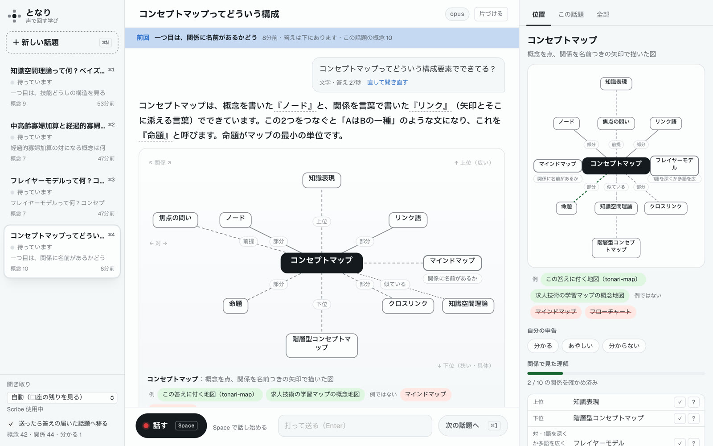</div>
        <figcaption>2026年10月29日の試しの画面。左に回している4つの話題、真ん中に答えと位置の図、右に記録の地図。右の緑の線は、声で答えて確かめた関係です。</figcaption>
      </figure>
    </div>
  </section>

  <!-- 2 回し方 -->
  <section id="loop">
    <div class="wrap">
      <div class="sec-head">
        <p class="kicker">回し方</p>
        <h2>答えを待つ30秒で、<wbr>次の話題を<wbr>聞く。</h2>
        <p class="lead">先生役の opus が棚の資料を読んで答えるまで、30秒ほどかかります。となりは話題ごとに先生役を1人ずつ置くので、待たずに次の話題へ移れます。答えが届いた話題には印が付き、戻ったときは最後に聞いたことが上の帯に出ます。</p>
      </div>
      <div class="loop-grid">
        <figure>
          <div class="tl" role="img" aria-label="3つの話題を回したときの時間の流れ。1本ずつなら70秒で答えは1つ、回せば3つ届く">
            <svg id="timeline" viewBox="0 0 980 300"></svg>
            <div class="legend" aria-hidden="true"><span><i style="background:var(--rec)"></i>話す</span><span><i style="background:var(--ready)"></i>文字にする</span><span><i style="background:var(--shaky)"></i>聞き違いを直す</span><span><i style="background:var(--paper-2);border:1px dashed var(--edge)"></i>先生役が考える</span><span><i style="background:var(--known)"></i>答えを読む</span></div>
          </div>
          <figcaption>2026年10月29日に測った長さ（話す9秒、文字にする0.4秒、直す4.2秒、答える34秒）で描いた例です。1本ずつだと70秒で読める答えは1つ、3本回すと3つになります。3本でもまだ18秒ほど待つ時間が残り、4本目を足すと9秒ほどになります。</figcaption>
        </figure>
        <div class="loop-pair">
          <ol class="steps">
            <li><kbd>⌘N</kbd><div><b>話題を作り、そのまま話す</b><p>新しい話題を作ると、すぐ録音が始まります。名前は最初の発言から自動で付きます。</p></div></li>
            <li><kbd>Space</kbd><div><b>もう一度押して送る</b><p>送ると、答えの届いている話題へ自動で移ります。Esc で録音をやめられます。</p></div></li>
            <li><kbd>⌘]</kbd><div><b>届いた順に読む</b><p>答えの届いた話題を古い順に回ります。<kbd>⌘1</kbd>〜<kbd>⌘9</kbd> で直接も開けます。</p></div></li>
          </ol>
          <figure>
            <div class="window"><div class="window-bar" aria-hidden="true"><i></i><i></i><i></i></div>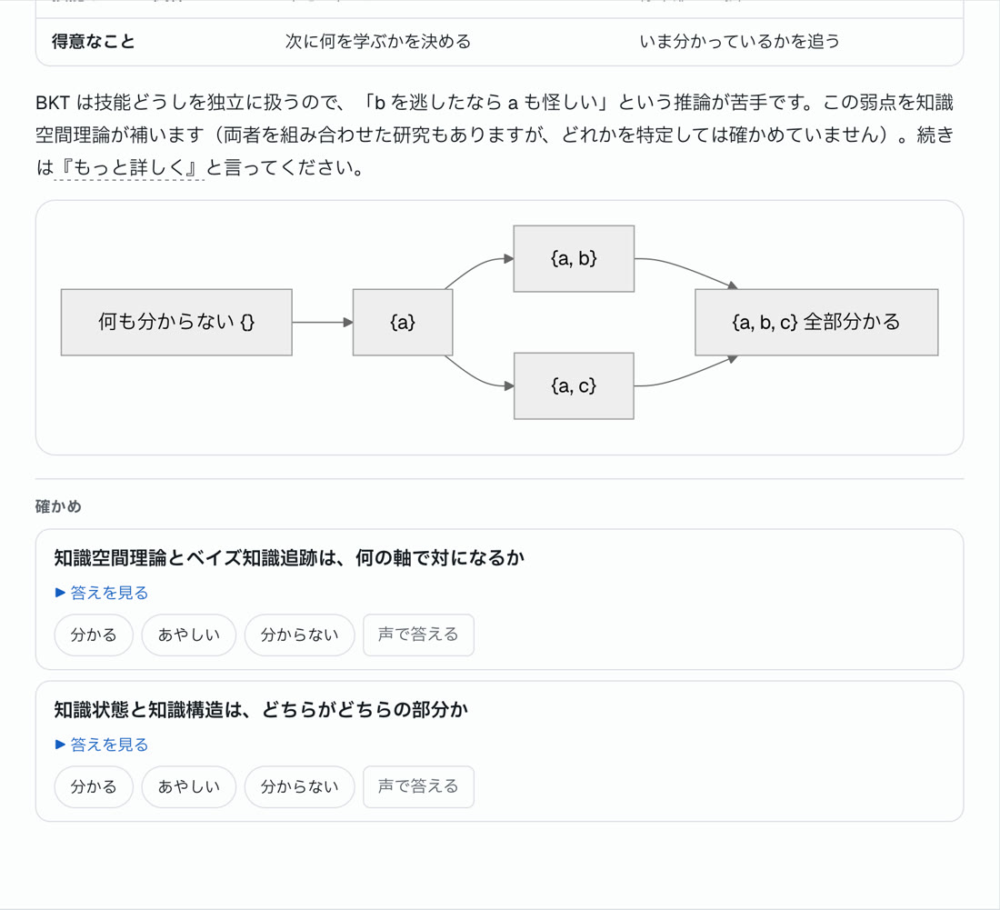</div>
            <figcaption>答えの後半。比較の表、流れ図、確かめの問いが続きます。</figcaption>
          </figure>
        </div>
      </div>
    </div>
  </section>

  <!-- 3 声 -->
  <section id="voice">
    <div class="wrap">
      <div class="sec-head">
        <p class="kicker">聞き取り</p>
        <h2>聞き違いは、<wbr>2つの耳と<wbr>1人の直し役で<wbr>消す。</h2>
        <p class="lead">声は2つの方法で同時に文字にします。直し役が2本を突き合わせ、聞き違いだけを直してから先生役に渡します。言い換えや要約はしません。</p>
      </div>
      <div class="pipe">
        <div class="pipe-step"><b>話す</b><p>押して話し、もう一度押して送る。録音はこの Mac に残ります。</p><span class="num">声 8.9秒の例</span></div>
        <div class="pipe-step"><b>2つの耳</b><div class="pipe-par"><div><b>Apple</b> Mac の中で文字にする。怪しい字と別の候補も出す</div><div><b>Scribe</b> ElevenLabs の文字起こし。この話題の用語の一覧を渡す</div></div><span class="num">0.4秒</span></div>
        <div class="pipe-step"><b>直し役</b><p>Claude の sonnet が、用語集と直前のやりとりを手がかりに直す。直しすぎたら元の文に戻す。</p><span class="num">4.2秒</span></div>
        <div class="pipe-step"><b>先生役</b><p>Claude の opus が、決めきれなかった箇所を断ってから答える。</p><span class="num">34秒</span></div>
      </div>
      <div class="voice-grid">
        <div class="heard">
          <div class="heard-row"><span class="k">聞こえた字</span><p>合格バンドのアプリで、遺族厚生年金の<span class="miss">中、高齢化価算</span>と<span class="miss">経過的株価算</span>の違いを教えてください。</p></div>
          <div class="heard-row"><span class="k">直した文</span><p><span class="unsure">合格バンド</span>のアプリで、遺族厚生年金の<span class="fixd">中高齢寡婦加算</span>と<span class="fixd">経過的寡婦加算</span>の違いを教えてください。</p></div>
          <p class="note">青い下線が直した箇所で、押すと聞き取りどおりの字に戻して聞き直せます。点線は決めきれなかった箇所です。この試しでは、先生役が「『合格バンド』は、アプリの名前から『合格伴走』と読みました。」と断ってから答えました。字を書き換えて聞き直すと聞き違いの台帳に入り、次から手がかりになります。</p>
          <figure>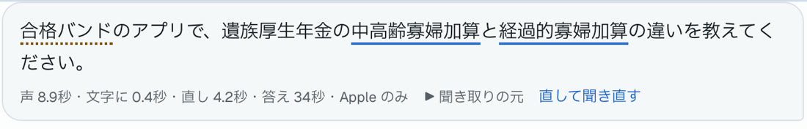</figure>
        </div>
        <div>
          <h3 style="margin-bottom:6px">文字の誤りの割合</h3>
          <p class="note" style="margin-bottom:22px">用語を入れた合成音声6本（計232字）で測りました。</p>
          <div class="cer" role="img" aria-label="誤りの割合。Apple 14.2%、Scribe 9.9%、Apple と直し役 0.9%、Scribe と用語の一覧 0.0%">
            <div class="cer-row"><span>Apple だけ</span><div class="cer-bar"><i style="width:94.7%"></i></div><span class="num">14.2%</span></div>
            <div class="cer-row"><span>Scribe だけ</span><div class="cer-bar"><i style="width:66%"></i></div><span class="num">9.9%</span></div>
            <div class="cer-row best"><span>Apple＋直し役（用語集つき）</span><div class="cer-bar"><i style="width:6%"></i></div><span class="num">0.9%</span></div>
            <div class="cer-row best"><span>Scribe＋用語の一覧</span><div class="cer-bar"><i class="cer-zero"></i></div><span class="num">0.0%</span></div>
          </div>
          <p class="note" style="margin-top:20px">棒の長さは15%を端にした比率です。用語集に読ませた用語がちょうど入っている、いちばん条件のよい数字で、肉声ではまだ測っていません。新しい話題の最初の発言では用語集が薄くなります。</p>
        </div>
      </div>
    </div>
  </section>

  <!-- 4 位置の図（スクロールで組み上がる） -->
  <section class="scene" id="map">
    <div class="wrap">
      <div class="scene-grid">
        <div class="beats" id="beats">
          <article class="beat" data-stage="0">
            <p class="kicker">位置の図</p>
            <h2>置き場所に、<wbr>意味がある。</h2>
            <p>言葉の意味を聞いたときに出る図です。上は広い言葉、下は具体的な言葉、左右は比べる相手、斜めはつながる言葉。置き方がいつも同じなので、何枚見ても「上にあるのは広いほう」と読めます。</p>
          </article>
          <article class="beat" data-stage="1"><span class="k">上</span><h3>上位概念</h3><p>コンセプトマップは、知識を構造で書き表す方法（知識表現）の一つです。先に広い枠が見えると、新しい言葉の置き場所が決まります。</p></article>
          <article class="beat" data-stage="2"><span class="k">下</span><h3>下位概念</h3><p>「〜の一種」と言えるものだけを下に置きます。階層型コンセプトマップは、コンセプトマップの一種です。</p></article>
          <article class="beat" data-stage="3"><span class="k">左右</span><h3>対の概念</h3><p>同じ仲間で、決め手の1点だけが違う相手を選びます。マインドマップとの違いは、関係に名前があるかどうか。比べる表は共通点を先に、違いを後に並べます。</p></article>
          <article class="beat" data-stage="4"><span class="k">斜め</span><h3>関係する概念</h3><p>線には関係の名前を付けます。ノード、リンク語、命題、クロスリンクは「部分」で、焦点の問いは「前提」。一種と部分は混ぜません。</p></article>
          <article class="beat" data-stage="5"><span class="k">話題をまたいで</span><h3>別の話題とも、<wbr>つながる</h3><p>概念は話題をまたいで1つの地図に溜まります。フレイヤーモデルについて聞いた別の話題の対が、ここにも現れました。</p></article>
          <article class="beat" data-stage="6"><span class="k">理解</span><h3>分かったかは、<wbr>線で数える</h3><p>確かめの問いに声で答えると、先生役が判定します。根拠として本人の言葉をそのまま引けた関係だけが緑になります。この試しの答えは<q>関係に名前があるかどうかで対になる</q>。10本のうち2本が確かめ済みです。</p></article>
        </div>
        <div class="stage-col">
          <div class="stage">
            <div class="map-card"><svg id="sceneMap" class="map-svg" viewBox="0 0 680 430" data-stage="6" role="img" aria-label="コンセプトマップを中心にした位置の図。上に知識表現、下に階層型コンセプトマップ、右にマインドマップ、左にフレイヤーモデル、斜めにノード・リンク語・命題・クロスリンク・焦点の問い・知識空間理論"></svg></div>
            <div class="map-foot"><span>関係で見た理解</span><span class="num" id="covN">2 / 10</span><div class="cov-bar"><i id="covBar"></i></div></div>
            <div class="lgd" aria-hidden="true"><span><i></i>棚の資料に根拠</span><span><i class="d"></i>一般の知識</span><span><i class="o"></i>推測</span><span><i class="k"></i>確かめ済み</span></div>
          </div>
        </div>
      </div>
    </div>
  </section>

  <!-- 5 見せ方 -->
  <section id="forms">
    <div class="wrap">
      <div class="sec-head">
        <p class="kicker">見せ方</p>
        <h2>中身に合わせて、<wbr>図を選ぶ。</h2>
        <p class="lead">答える前に、先生役が中身の形を上から順に確かめます。場合によって結論が変わるか、期間の話か、順番があるか、比べるのか。最初に当てはまった形の図を1つだけ、文と組にして出します。一言で足りるときは図を出しません。図の上には表現の名前と、その形にした理由が付きます。</p>
      </div>
      <div class="forms">
        <figure class="form-card">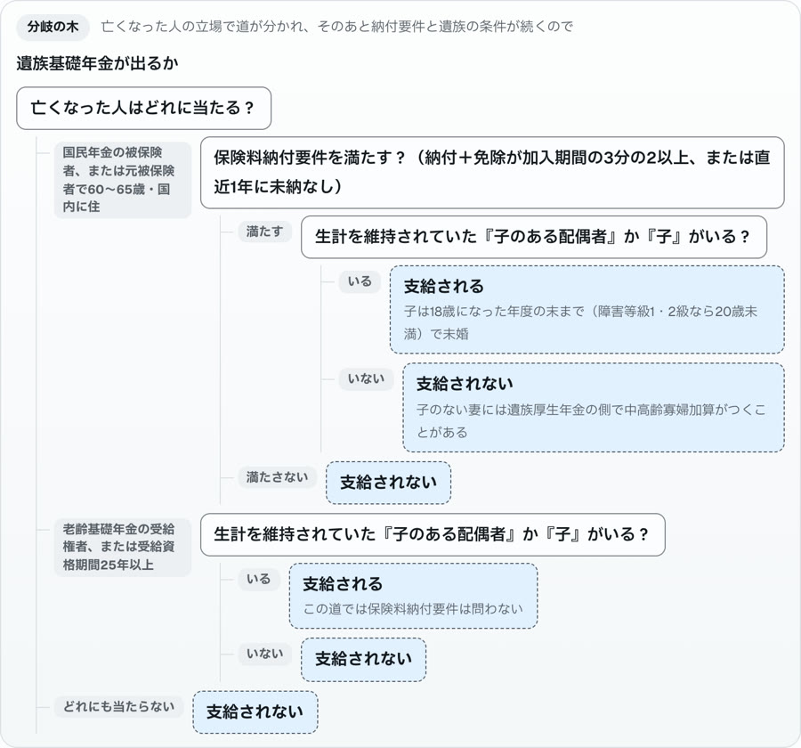<figcaption><b>分岐の木</b>条件で結論が変わるとき。遺族基礎年金をもらえるかどうか。</figcaption></figure>
        <figure class="form-card">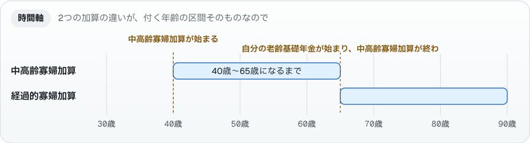<figcaption><b>時間軸</b>期間や年齢の区間が中身のとき。2つの寡婦加算が付く年齢。</figcaption></figure>
        <figure class="form-card">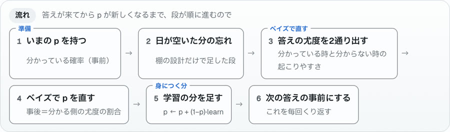<figcaption><b>流れ</b>順番のある手順や仕組み。ベイズ知識追跡で確率を直す手順。</figcaption></figure>
        <figure class="form-card">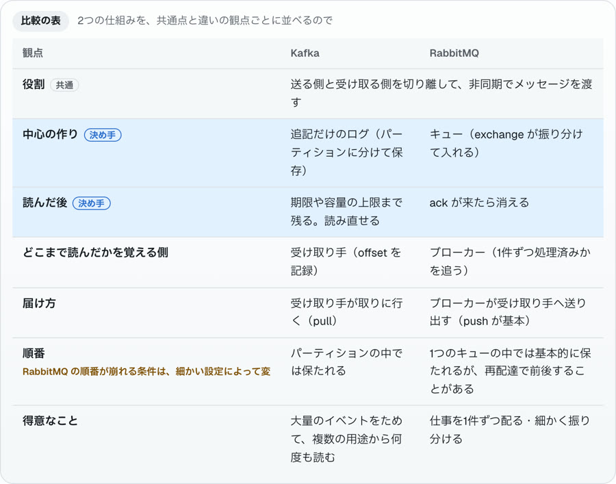<figcaption><b>比較の表</b>2つ以上を観点ごとに比べるとき。共通の行が先、決め手の行に印。</figcaption></figure>
        <figure class="form-card">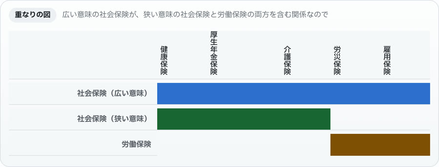<figcaption><b>重なりの図</b>集合の重なりや含む含まれない。社会保険と労働保険の範囲。</figcaption></figure>
        <figure class="form-card">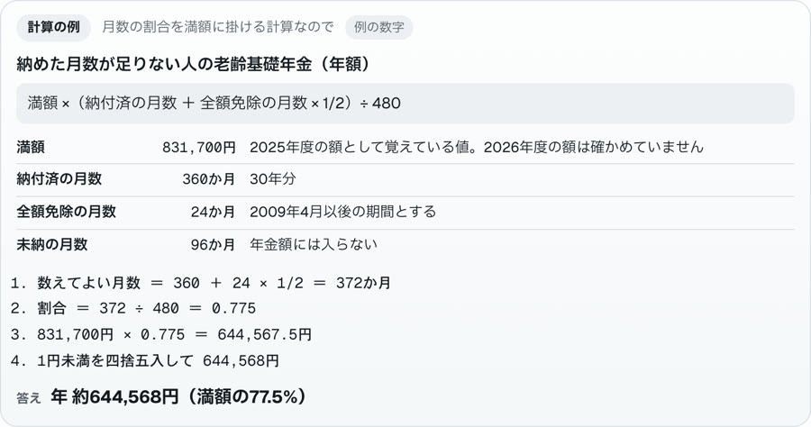<figcaption><b>計算の例</b>金額や日数の計算。出典を確かめていない数字には「例の数字」の札。</figcaption></figure>
        <figure class="form-card">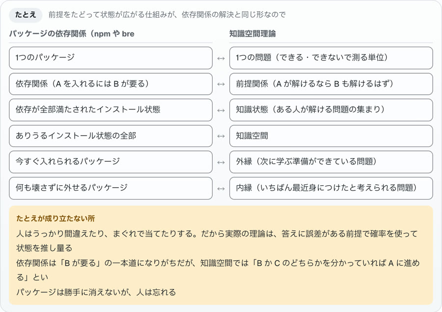<figcaption><b>たとえ</b>抽象的な仕組みを身近な物で。成り立たない所を必ず添えます。</figcaption></figure>
        <figure class="form-card">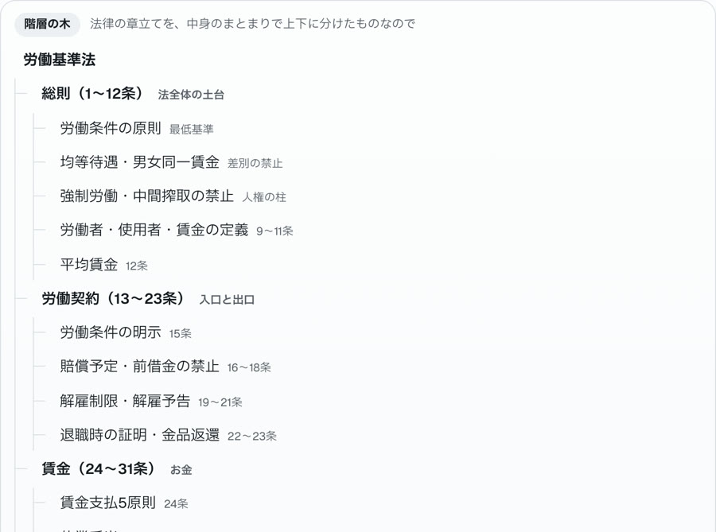<figcaption><b>階層の木</b>分類や全体像。労働基準法の全体。</figcaption></figure>
        <figure class="form-card">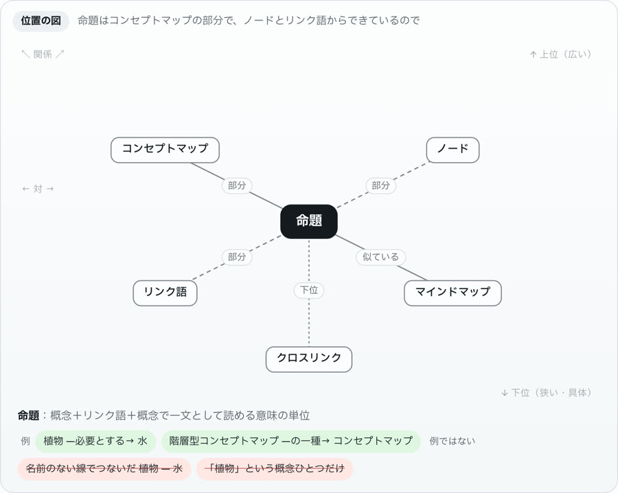<figcaption><b>位置の図</b>言葉の意味を聞いたとき。上位・下位・対が実在するときだけ。</figcaption></figure>
        <div class="form-card text-only"><b>文だけ</b><p>一言で足りるときは図を出しません。「BKT の slip って何？一言で」には、353字の文だけで答えました。</p></div>
      </div>
      <p class="note forms-note">10種類の質問を投げると、10問とも狙った形の図になりました。迷いやすい4問を3回ずつ聞いても、選んだ形は12回とも同じでした（2026年10月30日の試し）。</p>
      <div class="redo-grid">
        <div>
          <h3>短く・別の見せ方で・詳しく</h3>
          <p class="note">答えの下の3つの札で、同じ中身を言い直してもらえます。「別の見せ方で」は前の図を消さずに、違う形の図を横に並べ、2つを結びつける問いを1つ添えます（答えなくてもかまいません）。上の帯の「自動・短く・詳しく」で、これからの答えの長さも決められます。自動のときは、確かめの問いに答えられた概念ほど短くなります。</p>
          <div class="chips" style="margin-top:16px"><span class="chip">短く</span><span class="chip">別の見せ方で</span><span class="chip">詳しく</span></div>
        </div>
        <figure><div class="window"><div class="window-bar" aria-hidden="true"><i></i><i></i><i></i></div>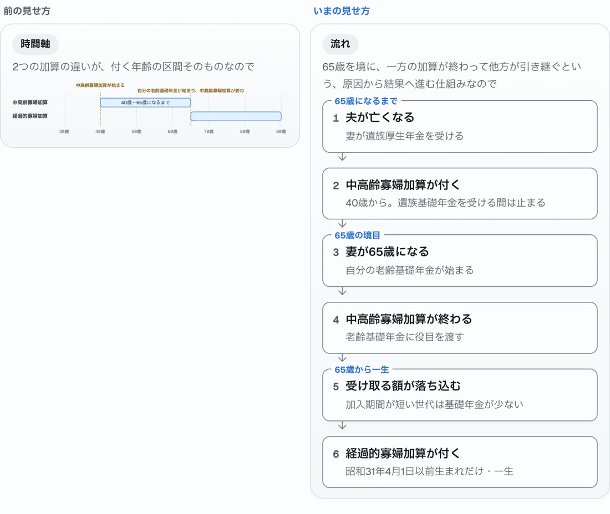</div><figcaption>時間軸で答えたあとに「別の見せ方で」を押したところ。65歳を境に引き継ぐ流れとして描き直しました。</figcaption></figure>
      </div>
    </div>
  </section>

  <!-- 6 理解度 -->
  <section id="understand">
    <div class="wrap">
      <div class="sec-head">
        <p class="kicker">理解度</p>
        <h2>「分かったつもり」を、<wbr>関係で<wbr>見つける。</h2>
        <p class="lead">「分かった？」と聞かれて分かると答えても、当てにならないことが研究で分かっています。そこで理解の記録を2本に分けました。</p>
      </div>
      <div class="und-grid">
        <div>
          <div class="tracks">
            <div><b>自分の申告</b><p>概念ごとに、自分で押します。</p><div class="chips"><span class="chip k">分かる</span><span class="chip s">あやしい</span><span class="chip u">分からない</span></div></div>
            <div><b>関係の確かめ</b><p>確かめの問いに答えると、先生役が関係ごとに判定します。本人の言葉を根拠に引けないときは記録しません。</p></div>
          </div>
          <div class="tbl">
            <table class="research">
              <thead><tr><th>研究で分かっていること</th><th>となりでの形</th></tr></thead>
              <tbody>
                <tr><td>概念図は見るだけより、自分で作るほうが効く（メタ分析で g＝0.43 と 0.72）</td><td>図は答えのたびに出し、確かめの問いで関係を自分で言ってもらう</td></tr>
                <tr><td>比べるときは、共通点を先に探すほうが学べる</td><td>比較の表は共通点の行が先、決め手の違いが後</td></tr>
                <tr><td>声で説明する学びは、先に「あとで説明してもらう」と伝えたときだけ効いた</td><td>話題の最初の答えで、あとで説明してもらうと予告する</td></tr>
                <tr><td>図は中身の構造で選ぶと効く。学ぶ人が好みで選んでも効果はほぼ無い（g＝0.05）</td><td>図の形は先生役が中身の形の問いの順で決め、名前と理由を添える</td></tr>
                <tr><td>関係の薄い話題を交互に学ぶ得は、見つかっていない</td><td>話題を回すのは待ち時間を使う工夫で、学習の効果としては扱わない</td></tr>
              </tbody>
            </table>
          </div>
        </div>
        <figure>
          <div class="warn-shot">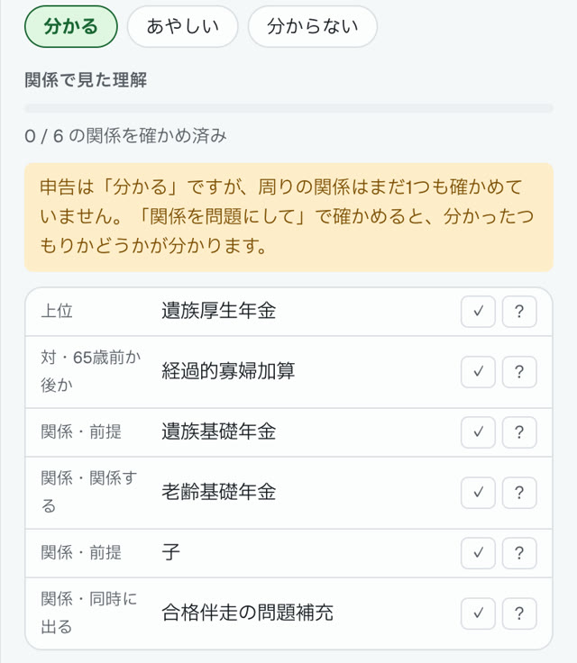</div>
          <figcaption>申告は「分かる」なのに、周りの関係を1つも確かめていない概念には注意が出ます。</figcaption>
        </figure>
      </div>
    </div>
  </section>

  <!-- 7 中身 -->
  <section id="inside">
    <div class="wrap">
      <div class="sec-head">
        <p class="kicker">中身</p>
        <h2>すべて手元の Mac で動く。</h2>
      </div>
      <div class="arch">
        <div class="arch-box"><b>となり.app</b><p>Mac の窓。録音と画面。Spotlight で「となり」と打てば開きます。</p></div>
        <div class="arrow" aria-hidden="true"></div>
        <div class="arch-box"><b>手元のサーバー</b><p>この Mac の中だけで待ち受け、話題・往復・概念・関係・理解度を記録します。</p></div>
        <div class="arrow" aria-hidden="true"></div>
        <div class="arch-stack">
          <div class="arch-box"><b>先生役 opus × 話題の数</b><p>Max プランの Claude Code。API キーは使いません。閉じても会話の続きから再開します。</p></div>
          <div class="arch-box"><b>棚の資料 156枚・約324万字</b><p>自分で作った調査や計画のページの写し。先生役が検索して根拠にします。</p></div>
        </div>
      </div>
      <div class="facts">
        <dl>
          <dt>opus を3本同時に動かしたとき</dt><dd>約2秒・混雑なし</dd>
          <dt>文字の質問の答え（資料を読む）</dt><dd>33秒</dd>
          <dt>声を文字にする</dt><dd>0.4秒</dd>
          <dt>聞き違いを直す</dt><dd>4.2秒</dd>
        </dl>
        <div class="promise">
          <p><b>録音と記録は Mac の中。</b>Scribe を使うときだけ録音が ElevenLabs に送られます。左下を「端末だけ」にすれば外に出しません。</p>
          <p><b>資料に無いことは、そう書く。</b>図の線は、資料に根拠があるか、一般の知識か、推測かで描き分けます。</p>
          <p><b>判定は機械の決まりで。</b>直しすぎの見張り、判定の根拠、「」の照合は、どれも決まった規則で確かめます。</p>
        </div>
      </div>
    </div>
  </section>

  <!-- 8 結び -->
  <section id="end" class="end">
    <div class="wrap">
      <h2>話すほど、<wbr>地図が<wbr>育つ。</h2>
      <p class="lead">話題を回すたびに概念と関係が溜まり、聞き違いの台帳が育ち、確かめた線が増えていきます。次に作るのはこの3つです。</p>
      <div class="next-grid">
        <div><b>空の図を声で埋める</b><p>同じ概念に戻ったら、完成した図の前に中心だけの図を出し、上下左右を声で言ってもらう。</p></div>
        <div><b>似た概念を続けて問う</b><p>取り違えやすい2つを意図して並べる。見分ける力はここで伸びます。</p></div>
        <div><b>日をまたいで問い直す</b><p>確かめた関係を、忘れかけたころにもう一度問う。</p></div>
      </div>
      <div class="open-it"><span>開き方</span><code>~/Applications/となり.app</code><span>Spotlight で「となり」</span></div>
    </div>
  </section>
</main>
<footer><div class="wrap foot-in"><p>数字はすべて2026年10月29日と30日の手元の試しで測ったものです。研究の出典は、設計書と調査メモ（tonari/research）にあります。</p><button type="button" id="motionBtn2" class="foot-btn">動きを止める</button></div></footer>

<nav class="dock" aria-label="ページの位置">
  <span class="hint">← → で進む</span>
  <span class="dots" id="dots"></span>
  <button type="button" id="motionBtn" aria-pressed="false">動きを止める</button>
</nav>

<script>
(function () {
  const root = document.documentElement;
  const esc = (s) => String(s).replace(/[&<>"]/g, (c) => ({ "&": "&amp;", "<": "&lt;", ">": "&gt;", '"': "&quot;" }[c]));

  // ── 時間の流れの図（2026-10-29 の実測の長さ）──
  (function timeline() {
    const svg = document.getElementById("timeline");
    if (!svg) return;
    const X0 = 118, X1 = 960, T = 70, sx = (t) => X0 + (X1 - X0) * t / T;
    const lanes = [
      { y: 44, name: "あなた" },
      { y: 92, name: "話題A" }, { y: 132, name: "話題B" }, { y: 172, name: "話題C" },
      { y: 246, name: "1本ずつ" },
    ];
    const topic = (s) => [[s, s + 9, "rec", "話す"], [s + 9, s + 9.4, "stt"], [s + 9.4, s + 13.6, "fix"], [s + 13.6, s + 47.6, "think", "考える 34秒"]];
    const rows = {
      "あなた": [[0, 9, "you", "A"], [10, 19, "you", "B"], [20, 29, "you", "C"], [29, 47.6, "wait", ""], [47.6, 57.6, "read", "Aを読む"], [57.6, 67.6, "read", "Bを読む"], [67.6, 70, "read", ""]],
      "話題A": topic(0), "話題B": topic(10), "話題C": topic(20),
      "1本ずつ": [[0, 9, "rec", "話す"], [9, 9.4, "stt"], [9.4, 13.6, "fix"], [13.6, 47.6, "think", "考える 34秒（待つ）"], [47.6, 57.6, "read", "読む"], [57.6, 66.6, "rec", "話す"], [66.6, 70, "stt"]],
    };
    let h = "";
    for (let t = 0; t <= T; t += 10) {
      h += `<line class="grid" x1="${sx(t)}" y1="22" x2="${sx(t)}" y2="268"/><text class="tick" x="${sx(t)}" y="290" text-anchor="middle">${t}秒</text>`;
    }
    h += `<line class="grid" x1="${X0}" y1="212" x2="${X1}" y2="212" style="stroke-dasharray:3 4"/>`;
    for (const ln of lanes) {
      h += `<text class="lane-t" x="0" y="${ln.y + 5}">${ln.name}</text>`;
      for (const [a, b, k, label] of rows[ln.name]) {
        const x = sx(Math.min(a, T)), w = Math.max(1.5, sx(Math.min(b, T)) - x);
        const hh = k === "wait" ? 2 : 22, y = ln.y - hh / 2;
        h += k === "wait"
          ? `<line class="seg-wait" x1="${x}" y1="${ln.y}" x2="${x + w}" y2="${ln.y}"/><text class="seg-label dark" x="${x + w / 2}" y="${ln.y - 8}" text-anchor="middle">まだ待つ</text>`
          : `<rect class="seg-${k}" x="${x}" y="${y}" width="${w}" height="${hh}" rx="5"/>`;
        if (label && k !== "wait" && w > 30) {
          const dark = k === "think";
          h += `<text class="seg-label${dark ? " dark" : ""}" x="${x + (dark ? 10 : w / 2)}" y="${ln.y + 4}" text-anchor="${dark ? "start" : "middle"}">${esc(label)}</text>`;
        }
      }
    }
    for (const [t, y] of [[47.6, 92], [57.6, 132], [67.6, 172], [47.6, 246]]) {
      h += `<circle cx="${sx(t)}" cy="${y}" r="5.5" class="seg-ready"/>`;
    }
    svg.innerHTML = h;
  })();

  // ── 位置の図（アプリと同じ置き方）。2026-10-29 の試しの答えと記録をそのまま使う ──
  const MAP = {
    center: "コンセプトマップ",
    nodes: [
      { d: "broader", p: [200, 38], slot: [340, 56], label: "知識表現", edge: "上位", src: "general", st: 1, ghost: "上位" },
      { d: "narrower", p: [200, 428], slot: [340, 376], label: "階層型コンセプトマップ", edge: "下位", src: "general", st: 2, ghost: "下位" },
      { d: "opposite", p: [338, 235], slot: [588, 214], label: "マインドマップ", edge: "関係に名前があるか", src: "general", st: 3, ghost: "対", known: 6 },
      { d: "related", p: [80, 160], slot: [178, 132], label: "ノード", edge: "部分", src: "shelf", st: 4, ghost: "関係" },
      { d: "related", p: [308, 132], slot: [502, 132], label: "リンク語", edge: "部分", src: "shelf", st: 4, ghost: "関係" },
      { d: "related", p: [92, 340], slot: [178, 296], label: "命題", edge: "部分", src: "general", st: 4, ghost: "関係", known: 6 },
      { d: "related", p: [316, 316], slot: [502, 296], label: "クロスリンク", edge: "部分", src: "general", st: 4, ghost: "関係" },
      { d: "related", p: [60, 60], slot: [60, 132], label: "焦点の問い", edge: "前提", src: "general", st: 4, ghost: "関係" },
      { d: "related", p: [330, 420], slot: [620, 296], label: "知識空間理論", edge: "似ている", src: "inferred", st: 4, ghost: "関係" },
      { d: "opposite", p: [62, 235], slot: [92, 214], label: "フレイヤーモデル", edge: "1語を深くか多語を広くか", src: "general", st: 5, ghost: "対", tag: "別の話題から" },
    ],
  };
  // 置き場所は2組。広い画面は 680×430、スマホは 400×470（縮めても字が小さくならないように）
  const phoneMQ = matchMedia("(max-width: 600px)");
  let CX = 340, CY = 214, CUT = 8;
  function lines(s, cut) { return s.length <= cut ? [s] : [s.slice(0, cut), s.slice(cut).length > cut ? s.slice(cut, cut * 2 - 1) + "…" : s.slice(cut)]; }
  function box(x, y, label, center, ghost, tag) {
    const fs = center ? 16 : 12.5, ls = lines(label, center ? 10 : CUT);
    const w = Math.max(...ls.map((l) => l.length)) * fs * 1.04 + (center ? 36 : 22), hh = ls.length * fs * 1.38 + (center ? 20 : 12);
    const ty = y - (ls.length - 1) * fs * 0.69;
    const t = ls.map((l, i) => `<tspan x="${x}" y="${ty + i * fs * 1.38}">${esc(l)}</tspan>`).join("");
    return `<rect x="${x - w / 2}" y="${y - hh / 2}" width="${w}" height="${hh}" rx="${center ? 13 : 9}"/>` +
      `<text class="real-t" text-anchor="middle" dominant-baseline="middle" style="font-size:${fs}px">${t}</text>` +
      (ghost ? `<text class="ghost-t" x="${x}" y="${y}" text-anchor="middle" dominant-baseline="middle">${ghost}</text>` : "") +
      (tag ? `<text class="tag" x="${x}" y="${y + hh / 2 + 15}" text-anchor="middle">${tag}</text>` : "");
  }
  function drawScene() {
    const svg = document.getElementById("sceneMap");
    const phone = phoneMQ.matches;
    const W = phone ? 400 : 680, H = phone ? 470 : 430;
    [CX, CY, CUT] = phone ? [200, 235, 6] : [340, 214, 8];
    svg.setAttribute("viewBox", `0 0 ${W} ${H}`);
    let e = "", l = "", n = "";
    MAP.nodes.forEach((nd, i) => {
      const [x, y] = phone ? nd.p : nd.slot;
      e += `<line class="edge e-${nd.src}" data-i="${i}" x1="${CX}" y1="${CY}" x2="${x}" y2="${y}"/>`;
      const under = nd.d === "opposite";
      const twoLines = nd.label.length > CUT;
      // スマホでは斜めの線の言葉を相手の札のすぐ下に置く（中ほどに置くと隣の札に重なる）
      const nearNode = phone && nd.d === "related";
      const mx = under || nearNode ? x : (CX + x) / 2;
      const my = under ? y + (nd.tag ? 44 : 30) + (twoLines ? 10 : 0) : nearNode ? y + 24 : (CY + y) / 2;
      const lim = phone && under ? 9 : 12;
      const word = nd.edge.length > lim ? nd.edge.slice(0, lim - 1) + "…" : nd.edge;
      l += `<g class="elab" data-i="${i}"><rect x="${mx - word.length * 5.6 - 7}" y="${my - 9.5}" width="${word.length * 11.2 + 14}" height="19" rx="9.5"/><text x="${mx}" y="${my + 0.5}" text-anchor="middle" dominant-baseline="middle">${esc(word)}</text></g>`;
      n += `<g class="node" data-i="${i}">${box(x, y, nd.label, false, nd.ghost, nd.tag)}</g>`;
    });
    n += `<g class="node center">${box(CX, CY, MAP.center, true)}</g>`;
    const guide = phone ? "" : `<g class="guide"><text x="670" y="20" text-anchor="end">↑ 上位（広い）</text><text x="670" y="424" text-anchor="end">↓ 下位（具体）</text></g>`;
    svg.innerHTML = guide + e + l + n;
  }
  function setStage(s) {
    const svg = document.getElementById("sceneMap");
    svg.dataset.stage = s;
    MAP.nodes.forEach((nd, i) => {
      const ghost = s < nd.st, known = nd.known && s >= nd.known;
      svg.querySelector(`.node[data-i="${i}"]`).classList.toggle("ghost", ghost);
      const ed = svg.querySelector(`.edge[data-i="${i}"]`), lb = svg.querySelector(`.elab[data-i="${i}"]`);
      ed.classList.toggle("ghost", ghost); lb.classList.toggle("ghost", ghost);
      ed.classList.toggle("known", !!known); lb.classList.toggle("known", !!known);
    });
    const known = s >= 6 ? 2 : 0;
    document.getElementById("covN").textContent = `${known} / 10`;
    document.getElementById("covBar").style.transform = `scaleX(${known / 10})`;
  }
  drawScene();
  setStage(6);
  phoneMQ.addEventListener?.("change", () => { drawScene(); setStage(current); });   // 既定＝組み上がった最終状態（スクリプトが途中で止まっても全部読める）

  const reduce = matchMedia("(prefers-reduced-motion: reduce)");
  let motionOn = !reduce.matches;
  try { if (localStorage.getItem("tonari-deck-motion") === "off") motionOn = false; } catch (e) { /* 保存できなくても動く */ }

  const beats = [...document.querySelectorAll(".beat")];
  let current = 6;
  function onScroll() {
    if (!motionOn) return;
    const pin = document.querySelector(".stage-col").getBoundingClientRect();
    const mid = phoneMQ.matches ? Math.min(innerHeight - 60, pin.bottom + 90) : innerHeight * 0.5;
    let pick = null;
    for (const b of beats) {
      const r = b.getBoundingClientRect();
      if (r.top <= mid) pick = b;
    }
    const first = beats[0].getBoundingClientRect();
    const s = pick ? Number(pick.dataset.stage) : (first.top > innerHeight ? 0 : 0);
    beats.forEach((b) => b.classList.toggle("on", b === (pick || beats[0])));
    if (s !== current) { current = s; setStage(s); }
  }
  function applyMotion() {
    root.classList.toggle("motion", motionOn);
    root.classList.toggle("static-page", !motionOn);
    for (const id of ["motionBtn", "motionBtn2"]) {
      const b = document.getElementById(id);
      b.textContent = motionOn ? "動きを止める" : "動きを戻す";
      b.setAttribute("aria-pressed", String(!motionOn));
    }
    if (motionOn) {
      // 場面が今の画面より下にあるときだけ、空の置き場所から始める
      const top = document.getElementById("map").getBoundingClientRect().top;
      if (top > innerHeight) { current = 0; setStage(0); }
      onScroll();
    } else { current = 6; setStage(6); beats.forEach((b) => b.classList.remove("on")); }
  }
  applyMotion();
  addEventListener("scroll", onScroll, { passive: true });
  addEventListener("resize", onScroll);
  reduce.addEventListener?.("change", (e) => { motionOn = !e.matches; applyMotion(); });
  for (const id of ["motionBtn", "motionBtn2"]) document.getElementById(id).addEventListener("click", () => {
    motionOn = !motionOn;
    try { localStorage.setItem("tonari-deck-motion", motionOn ? "on" : "off"); } catch (e) { /* なし */ }
    applyMotion();
  });

  // ── 章の点と、← → で章ごとに進む（発表に使う）──
  const secs = [...document.querySelectorAll("main > section")];
  const dots = document.getElementById("dots");
  dots.innerHTML = secs.map((s, i) => `<a href="#${s.id}" aria-label="${i + 1}章へ"></a>`).join("");
  const dotEls = [...dots.children];
  function nowIndex() {
    let k = 0;
    secs.forEach((s, i) => { if (s.getBoundingClientRect().top <= innerHeight * 0.35) k = i; });
    return k;
  }
  function paintDots() { const k = nowIndex(); dotEls.forEach((d, i) => d.classList.toggle("on", i === k)); }
  addEventListener("scroll", paintDots, { passive: true });
  paintDots();
  addEventListener("keydown", (e) => {
    if (e.target.closest && e.target.closest("input, textarea, select, button")) return;
    let dir = 0;
    if (e.key === "ArrowRight" || e.key === "PageDown") dir = 1;
    if (e.key === "ArrowLeft" || e.key === "PageUp") dir = -1;
    if (!dir) return;
    e.preventDefault();
    // 位置の図の場面の中では、拍ごとに進む
    const inScene = secs[nowIndex()].id === "map";
    if (inScene && motionOn) {
      const idx = beats.findIndex((b) => b.classList.contains("on"));
      const nb = beats[idx + dir];
      if (nb) { nb.scrollIntoView({ behavior: "smooth", block: "center" }); return; }
    }
    const t = secs[Math.min(secs.length - 1, Math.max(0, nowIndex() + dir))];
    t.scrollIntoView({ behavior: motionOn ? "smooth" : "auto", block: "start" });
  });
})();
</script>
